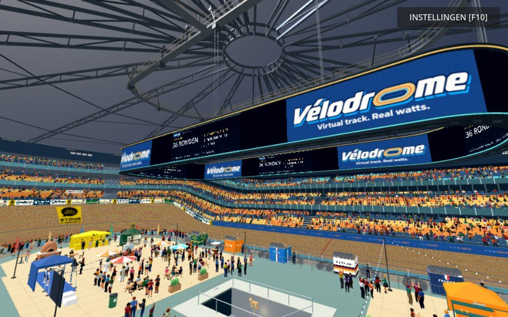
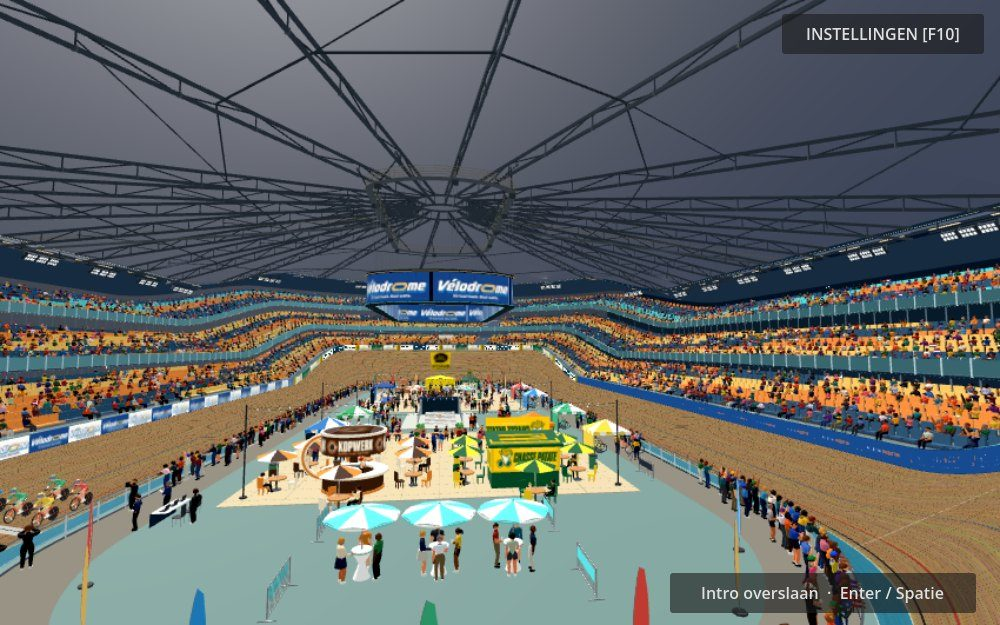

Bèta in actieve ontwikkeling voor Windows. De ondersteuning voor trainers en controllers wordt nog op echte hardware getest.
Rijden in het wiel
Slipstream telt. Uit de wind blijven spaart energie voor later; een sprint die te vroeg komt, betaal je in de laatste bocht.
Tegenstanders met een eigen profiel
Sprinters, tijdrijders en aanvallers koersen elk op hun manier: wegspringen, het tempo hoog houden of wachten op de bel. Elke renner heeft een paspoort met zijn sterktes.
Echte watts
Koppel een Wahoo KICKR of KICKR CORE, stuur en schakel met Zwift Ride en zie je Garmin-hartslag in beeld. De piste stuurt helling en slipstream naar je trainer.
Ook zonder trainer
Stuur met A en D en regel je vermogen met de pijltjestoetsen, in stappen van 25 W.
Zeven wedstrijdvormen om te rijden
Scratch, puntenkoers en afvalling beginnen met één geneutraliseerde ronde. Daarna is het koers. De keirin start achter de derny.



Een volle piste



Trainen op de piste en op vermogen
Bepaal je FTP met de ramp test, bouw workouts in de editor of importeer .zwo-bestanden. Op de piste oefen je achter de derny, de vliegende start of de handaflossing.
Klaar om te rijden?
Vélodrome is gratis en open source. Download de Windows-versie of bouw het spel zelf vanuit de broncode.